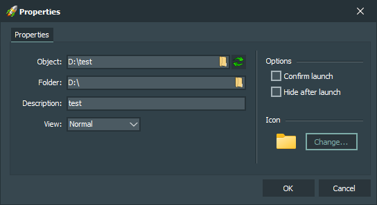

Interface elements:
-
Object
Contains the path to the file or folder.
-
Folder
Contains the path to the working directory of the file or folder.
-
Description
Contains a comment for the file or folder. It is displayed as a tooltip when you hover the mouse cursor over the button with the file or folder, as well as in the status bar of the main application window.
-
View
Contains the state of the window with which the file or folder will be launched.
-
Confirm launch
Ask for confirmation to run a file or folder.
-
Hide after launch
Hide the main application window after running a file or folder.
-
«Change (icon)» button
Opens a window for changing the icon of the button.
-
«OK» button
Confirms changing the properties of the selected button.
-
«Cancel» button
Doesn't confirm changing the properties of the selected button.